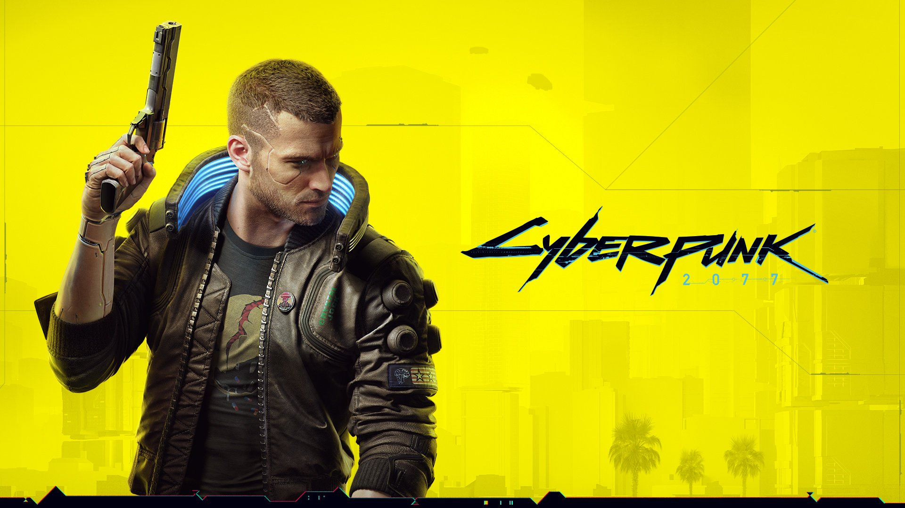

Kingdom Hearts Arrives on Xbox
From 2002 to 2018, the main story of Kingdom Hearts has only been playable on Sony PlayStation consoles. However, in 2019, the main story of the Kingdom Hearts series choose to appear on multiple video gaming consoles instead of just one. When the first video game of the Kingdom Hearts series was released in 2002, it originally released only on PlayStation 2. Since then, the eleven other video games have appeared on different video game consoles beginning with the second video game about two years later.
Before continuing the discussion further, the readers need to know what Kingdom Hearts is, how it got on different video gaming consoles...(click here for more)

Changing the Role-Playing Genre
When it comes to the action role-playing genre of video games, most video game companies follow the genre to the nth degree. However, the creators of Cyberpunk 2077 want to take a different approach on the role-playing game's genre. Instead of the main character having medieval weapons and traveling to different worlds, the video game features the main character in his own world using modernized weapons to achieve his objectives and goals.
Depending upon the player of this particular video game, Cyberpunk 2077 can modernized the role-playing genre for new innovations or it can fail at being an action role-playing genre game...(click for more)

Final Fantasy VII: Remake Vs. Original
When it comes to a video game, video gamers will ask if it meets or exceeds expectations. If it meets expectations then both the original video game and the remake video game will be compared and contrasted for generations to come. If it exceeds expectations then the original video game is normally forgotten in favor of its modern counterpart.
To evaluate these scenarios more throughly, the reader needs a classical video game that is currently being remade. This video game is Final Fantasy VII. Final Fantasy VII is known both in the video game industry and the action role-playing genre as one of the greatest video games of all time...(click for more)
This is the blogs' main page. Within this page, blog's titles, images, and introduction are introduced but the entire blog is expanded on another page. To get the entire blog click on the image, title, or introductory paragraph of the blog.